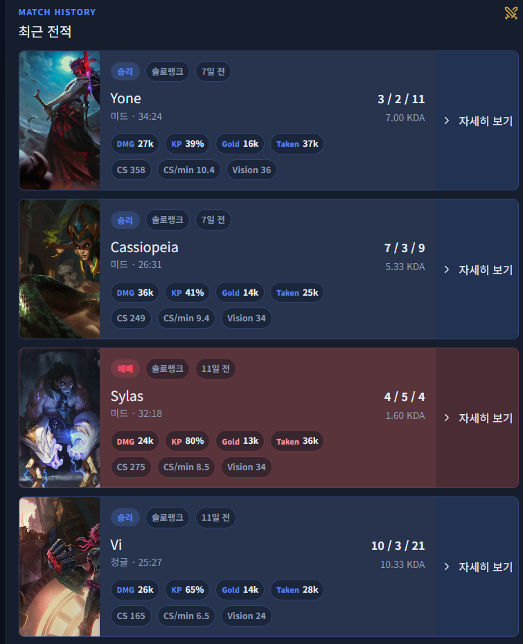
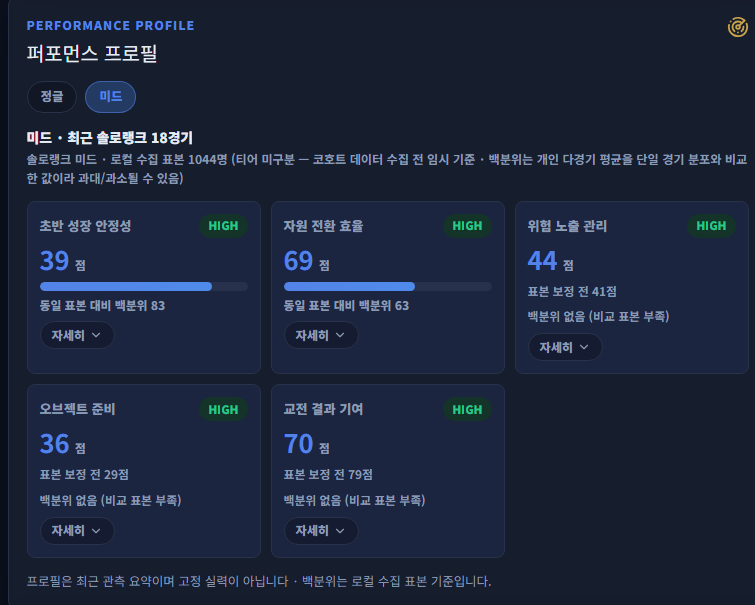

경기 복기
타임라인, 변곡점, 킬·데스·오브젝트 로그를 한 화면에서 확인합니다.
Evidence-based personal analytics
경기 데이터를 수집하고, 플레이의 반복 패턴을 계산해, 근거가 남는 복기 리포트로 연결합니다.
Project scope
타임라인, 변곡점, 킬·데스·오브젝트 로그를 한 화면에서 확인합니다.
최근 경기의 성장·위험·교전·오브젝트 경향을 누적해 보여줍니다.
매 분의 경기 상태만으로 최종 승리를 예측하고 보정 성능을 검증합니다.
규칙 코드가 계산한 숫자와 사건만 이용해 복기 문장을 생성합니다.
Architecture
경기·타임라인 수집
레이트리밋과 캐시
원본 JSONB 보존
정규화 데이터 저장
지표·에피소드·프로필
버전이 있는 규칙 계산
계산 결과를 서술
새 숫자 생성 차단
Next.js 복기 화면
근거와 한계 표시
Match intelligence
내 데스 이후 90초 안에 넘어간 오브젝트와 골드 손실을 연결합니다.
팀이 유리한 구간에서 발생한 사망과 이후 우세 변화에 가중치를 둡니다.
획득한 골드를 아이템으로 전환하기 전 잃어버리는 습관을 추적합니다.
고립 사망, 딥다이브, 인원 열세 교전 같은 고위험 스타일을 관찰합니다.
교전 중 생존과 이탈이 피해 지분과 후속 성과에 남긴 흔적을 봅니다.
첫 사망 뒤 짧은 시간 안에 반복 사망으로 이어지는 구간을 분리합니다.
Product screen 01
승패와 KDA를 나열하는 데서 끝내지 않고, 경기별 위험 신호와 분석 가능한 근거를 같은 흐름에서 확인합니다.

Episode & profile
킬·어시스트를 시간과 거리 기준으로 묶어 하나의 교전 에피소드로 복원합니다.
오브젝트가 유효한 시간창 안에서 관련 사망만 연결하고 중복 계산을 막습니다.
판정 가능한 사건만 분모에 포함하며, 위치 결측과 표본 부족을 함께 표시합니다.
최근 N경기에서 반복되는 습관을 근거 경기 ID와 함께 찾아냅니다.
Product screen 02
대표 경기, 최고 경기, 평소와 달랐던 경기를 자동으로 골라 복기의 출발점을 제공합니다.

Data & machine learning
골드·XP·CS·타워·오브젝트 차이를 분 단위 행으로 생성합니다.
각 시점에 해당 경기의 최종 승패를 연결하되 미래 프레임은 입력하지 않습니다.
같은 경기의 행이 학습과 테스트에 섞이지 않도록 경기 단위 시간 분할을 사용합니다.
정확도뿐 아니라 Log Loss, Brier, ECE로 확률 자체의 품질을 검증합니다.
Evidence-grounded report
지표, 이벤트, 미니맵 스냅샷, 신뢰도와 분석 한계를 구조화해 전달합니다.
반복 패턴을 요약하고 근거가 있는 피드백과 확인 질문을 작성합니다.
관찰, 개선 제안, 다음 리플레이에서 확인할 장면을 하나의 흐름으로 보여줍니다.
Roadmap
탑·정글·미드·원딜·서포터의 역할과 판단 기준에 맞춰 지표를 분리합니다.
패치·티어·챔피언 상성별 코호트를 쌓아 점수와 신뢰도를 보정합니다.
Boosting 모델을 같은 검증 기준으로 비교하고 통과한 모델만 반영합니다.
10인 위치와 시야 정보를 추출해 주요 장면의 판단 근거를 더 세밀하게 만듭니다.
Closing
이 프로젝트의 핵심은 AI가 그럴듯한 코칭을 만드는 것이 아니라, 다시 확인할 수 있는 데이터와 근거를 먼저 만드는 것입니다.
←→ 슬라이드 이동
Space 다음 슬라이드
HomeEnd 처음·마지막
F 전체 화면
? 도움말 열기
Esc 도움말 닫기